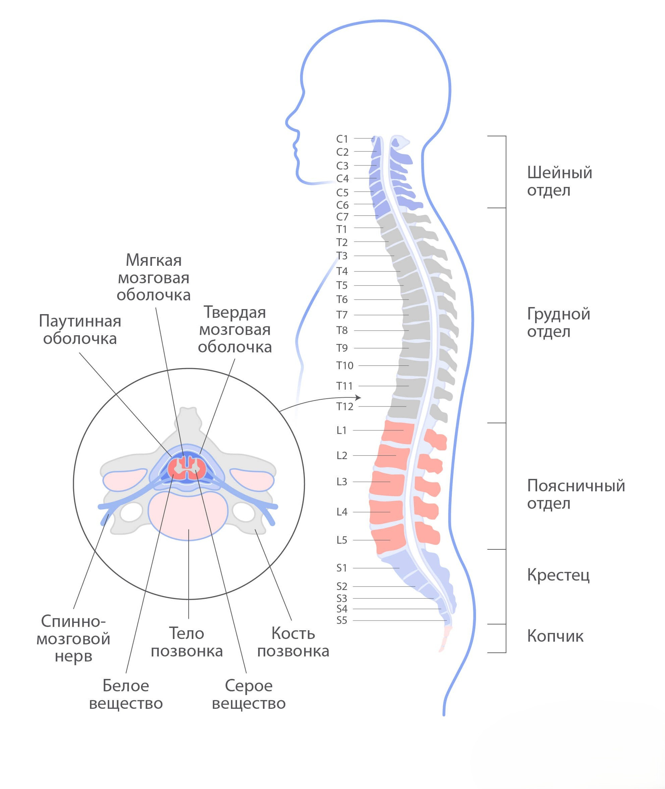

Спинной мозг является продолжением ствола головного мозга и по форме напоминает уплощенный цилиндр, сужающийся в конце в виде конуса. Спинной мозг располагается в позвоночном канале и заканчивается на уровне первого или второго поясничного позвонка у взрослого человека. У новорожденного нижний конец спинного мозга находится на уровне третьего поясничного позвонка. На том уровне, где заканчивается спинной мозг, продолжаются пучки нервных волокон под названием "конский хвост". Свое название эти пучки получили потому, что они простираются в позвоночном канале вертикально и внешне напоминают хвост лошади.
The spinal cord is an extension of the brain stem and resembles a flattened cylinder that tapers at the end into a cone shape. The spinal cord is located in the spinal canal and ends at the level of the first or second lumbar vertebra in an adult. In newborns, the lower end of the spinal cord is at the level of the third lumbar vertebra. At the level where the spinal cord ends, bundles of nerve fibers called the "cauda equina" continue. These bundles got their name because they extend vertically in the spinal canal and outwardly resemble a horse's tail.
Жұлын ми сабағының жалғасы болып табылады және пішіні жазық цилиндрге ұқсайды, соңы конус тәрізді тарылады. Жұлын омыртқа каналында орналасқан және ересек адамда бірінші немесе екінші бел омыртқасы деңгейінде аяқталады. Жаңа туған нәрестеде жұлынның төменгі ұшы үшінші бел омыртқасы деңгейінде орналасқан. Жұлын аяқталатын деңгейде "ат құйрығы" деп аталатын жүйке талшықтарының шоғыры жалғасады. Бұл шоғырлар омыртқа каналында тігінен созылып, сырттай ат құйрығына ұқсайтындықтан осылай аталған.

Центральной частью спинного мозга является серое вещество, которое состоит из тел нервных клеток (нейронов). По форме серое вещество спинного мозга напоминает бабочку, в центре которой располагается центральный канал. Этот канал заполнен спинномозговой жидкостью (ликвором) и соединяется с IV желудочком мозга. Ликвор обеспечивает амортизацию, питание и обменные процессы между кровью и спинным мозгом.
The central part of the spinal cord is the gray matter, which consists of the bodies of nerve cells (neurons). In shape, the gray matter of the spinal cord resembles a butterfly, in the center of which is the central canal. This canal is filled with cerebrospinal fluid (CSF) and connects to the fourth ventricle of the brain. CSF provides cushioning, nutrition, and metabolic processes between the blood and the spinal cord.
Жұлынның орталық бөлігі - сұр зат, ол жүйке жасушаларының (нейрондардың) денелерінен тұрады. Пішіні бойынша жұлынның сұр затшасы көбелекке ұқсайды, оның ортасында орталық канал орналасқан. Бұл канал спинномозгтық сұйықтықпен (ликвор) толтырылған және мидың төртінші қарыншасымен байланысады. Ликвор амортизацияны, қоректенуді және қан мен жұлын арасындағы зат алмасу процестерін қамтамасыз етеді.
Вокруг «бабочки» располагается белое вещество, которое образовано отростками нервных клеток. Они формируют восходящие и нисходящие проводящие пути для обмена информацией между разными отделами ЦНС. По восходящим путям сенсорное возбуждение (ощущения боли, температуры) от периферических рецепторов и рецепторов внутренних органов передается в головной мозг. По нисходящим путям передается двигательная команда от головного мозга.
Around the "butterfly" is the white matter, which is formed by the processes of nerve cells. They form ascending and descending pathways for the exchange of information between different parts of the CNS. Along the ascending pathways, sensory excitation (sensations of pain, temperature) from peripheral receptors and receptors of internal organs is transmitted to the brain. Along the descending pathways, motor commands from the brain are transmitted.
"Көбелек" айналасында жүйке жасушаларының өсінділерінен тұратын ақ зат орналасқан. Олар ОЖЖ-нің әртүрлі бөлімдері арасында ақпарат алмасу үшін көтерілу және түсу жолдарын құрайды. Көтерілу жолдары бойынша перифериялық рецепторлар мен ішкі ағзалардың рецепторларынан сезімдік қозу (ауырсыну, температура сезімі) миға жеткізіледі. Түсу жолдары бойынша мидан қозғалыс командалары жеткізіледі.
Спинной мозг имеет три оболочки: твердую, паутинную и самую глубокую – мягкую. Твердая оболочка окружает спинной мозг снаружи и обеспечивает защиту от механических повреждений. Паутинная оболочка имеет связки, которые участвуют в фиксации спинного мозга. Между паутинной и мягкой оболочками находится подпаутинное пространство, содержащее спинномозговую жидкость. Мягкая оболочка богата кровеносными сосудами, питающими спинной мозг.
The spinal cord has three membranes: the dura mater, arachnoid, and the deepest - the pia mater. The dura mater surrounds the spinal cord from the outside and provides protection against mechanical damage. The arachnoid membrane has ligaments that are involved in fixing the spinal cord. Between the arachnoid and pia mater is the subarachnoid space containing cerebrospinal fluid. The pia mater is rich in blood vessels that nourish the spinal cord.
Жұлынның үш қабығы бар: қатты, өрмекші тәрізді және ең тереңі - жұмсақ. Қатты қабық жұлынды сырттан қоршап, механикалық зақымданудан қорғайды. Өрмекші тәрізді қабықта жұлынды бекітуге қатысатын байламдар бар. Өрмекші тәрізді және жұмсақ қабықтар арасында спинномозгтық сұйықтық бар субарахноидальды кеңістік орналасқан. Жұмсақ қабық жұлынды қоректендіретін қан тамырларына бай.
Структурно спинной мозг делится на сегменты. Один сегмент соответствует одной паре спинномозговых нервов. Каждый сегмент содержит две пары спинномозговых корешков — передние и задние. Передний корешок является чувствительным и несет чувствительную информацию, а задний корешок – двигательный, он отправляет моторные команды к мышцам. Один задний и один передний корешок вместе составляют один спинномозговой нерв, который обеспечивает получение и передачу сигналов на определенном участке тела. Выделяют 31 пару спинномозговых нервов: 8 шейных, 12 грудных, 5 поясничных, 5 крестцовых и 1 копчиковый.
Structurally, the spinal cord is divided into segments. One segment corresponds to one pair of spinal nerves. Each segment contains two pairs of spinal roots - anterior and posterior. The anterior root is sensory and carries sensory information, while the posterior root is motor and sends motor commands to the muscles. One posterior and one anterior root together form one spinal nerve, which ensures the reception and transmission of signals in a certain part of the body. There are 31 pairs of spinal nerves: 8 cervical, 12 thoracic, 5 lumbar, 5 sacral and 1 coccygeal.
Құрылымы жағынан жұлын сегменттерге бөлінеді. Бір сегмент бір жұп жұлындық жүйкеге сәйкес келеді. Әрбір сегментте екі жұп жұлындық тамырлар бар - алдыңғы және артқы. Алдыңғы тамыр сезімтал және сезімдік ақпаратты тасымалдайды, ал артқы тамыр - қозғалыс, ол бұлшықеттерге қозғалыс командаларын жібереді. Бір артқы және бір алдыңғы тамыр бірге бір жұлындық жүйкені құрайды, ол дененің белгілі бір бөлігінде сигналдарды қабылдау мен жеткізуді қамтамасыз етеді. Жұлындық жүйкелердің 31 жұбы бар: 8 мойын, 12 кеуде, 5 бел, 5 құйымшақ және 1 құйрық.
В шейном отделе сегменты и позвонки соответствуют друг другу. Далее они перестают совпадать, потому что рост позвоночника опережает рост спинного мозга. Поскольку спинной мозг короче позвоночника, это позволяет безопасно выполнять люмбальные пункции в данном отделе позвоночника без риска повреждения спинного мозга.
In the cervical region, the segments and vertebrae correspond to each other. Further, they cease to coincide because the growth of the spine outpaces the growth of the spinal cord. Since the spinal cord is shorter than the spine, this allows safe lumbar punctures to be performed in this part of the spine without the risk of damaging the spinal cord.
Мойын бөлімінде сегменттер мен омыртқалар бір-біріне сәйкес келеді. Одан әрі олар сәйкес келмейді, себебі омыртқаның өсуі жұлынның өсуінен озып кетеді. Жұлын омыртқаға қарағанда қысқа болғандықтан, бұл омыртқаның осы бөлігінде жұлынды зақымдау қаупісіз қауіпсіз люмбалды пункциялар жасауға мүмкіндік береді.
Функции разных отделов спинного мозга
Functions of different parts of the spinal cord
Жұлынның әртүрлі бөлімдерінің функциялары
Вся чувствительная информация о боли, давлении, температуре проходит через спинной мозг от рецепторов кожи, мышц, внутренних органов и идет в головной мозг для обработки информации. А в обратном порядке от головного мозга через спинной мозг проходит возбуждающий или тормозящий импульс к скелетным мышцам и гладким мышцам внутренних органов.
All sensory information about pain, pressure, and temperature passes through the spinal cord from receptors in the skin, muscles, and internal organs and goes to the brain for processing. In the opposite direction, excitatory or inhibitory impulses pass from the brain through the spinal cord to the skeletal muscles and smooth muscles of the internal organs.
Ауырсыну, қысым, температура туралы барлық сезімталдық ақпараты терінің, бұлшықеттердің және ішкі ағзалардың рецепторларынан жұлын арқылы өтіп, ақпаратты өңдеу үшін миға барады. Кері бағытта мидан жұлын арқылы қаңқа бұлшықеттеріне және ішкі ағзалардың тегіс бұлшықеттеріне қоздырушы немесе тежеуші импульстар жеткізіледі.
Шейный отдел отвечает за проведение чувствительных импульсов от шеи, головы, грудной клетки, а также за мышечную деятельность этих зон и управляет диафрагмой (главной дыхательной мышцей).
The cervical region is responsible for conducting sensory impulses from the neck, head, and chest, as well as for the muscular activity of these areas and controls the diaphragm (the main respiratory muscle).
Мойын бөлімі мойыннан, бастан, кеудеден сезімталдық импульстарын өткізуді, сондай-ақ осы аймақтардың бұлшықеттік қызметін және диафрагманы (негізгі тыныс алу бұлшықетін) басқаруды қамтамасыз етеді.
Грудной отдел контролирует движение и чувствительность верхних конечностей и туловища, является центром регуляции большинства внутренних органов.
The thoracic region controls movement and sensation in the upper limbs and torso and is the center for regulating most internal organs.
Кеуде бөлімі жоғарғы аяқ-қолдардың және дене қуысының қозғалысы мен сезімталдығын басқарады және көптеген ішкі ағзаларды реттеу орталығы болып табылады.
Поясничный отдел обеспечивает чувствительность брюшной стенки, бедер, голеней и стоп, наружных половых органов, а также регулирует деятельность почек, отдела толстой кишки и мочеполовых органов.
The lumbar region provides sensation to the abdominal wall, thighs, lower legs, and feet, external genitalia, and also regulates the activity of the kidneys, colon, and genitourinary organs.
Бел бөлімі құрсақ қабырғасының, жамбастың, астыңғы аяқтың және табанның, сыртқы жыныс мүшелерінің сезімталдығын қамтамасыз етеді, сонымен қатар бүйректердің, қалың ішектің және зәр-жыныс мүшелерінің қызметін реттейді.
Крестцовый отдел контролирует движение и чувствительность стоп, голеней и бедер, мышц таза и промежности, половых органов.
The sacral region controls movement and sensation in the feet, lower legs, and thighs, pelvic and perineal muscles, and genital organs.
Құйымшақ бөлімі табанның, астыңғы аяқтың және жамбастың қозғалысы мен сезімталдығын, таз және аралық бұлшықеттерін, жыныс мүшелерін басқарады.
Копчиковый отдел отвечает за чувствительность кожи над копчиком.
The coccygeal region is responsible for the sensitivity of the skin over the coccyx.
Құйрық бөлімі құйрық үстінің терісінің сезімталдығына жауап береді.
По локализации симптомов можно предположить уровень поражения спинного мозга. Например, повреждение спинного мозга на поясничном уровне может сказаться на функционировании мышц ног и работе мочевого пузыря.
By the localization of symptoms, one can assume the level of spinal cord damage. For example, damage to the spinal cord at the lumbar level can affect the functioning of the leg muscles and the bladder.
Симптомдардың локализациясы бойынша жұлынның зақымдану деңгейін болжауға болады. Мысалы, жұлынның бел деңгейіндегі зақымдануы аяқ бұлшықеттерінің жұмысына және қуықтың жұмысына әсер етуі мүмкін.
Выводы
Conclusions
Қорытынды
Спинной мозг – это орган центральной нервной системы, который состоит из нейронов и их отростков. Он является продолжением ствола головного мозга и находится в позвоночном канале. Каждый сегмент спинного мозга имеет спинномозговые нервы, которые обеспечивают чувствительность определенных участков тела. Основными функциями спинного мозга являются передача информации между головным мозгом и остальными частями тела и координация рефлексов, не зависящих от мозга.
The spinal cord is an organ of the central nervous system that consists of neurons and their processes. It is an extension of the brain stem and is located in the spinal canal. Each segment of the spinal cord has spinal nerves that provide sensation to specific areas of the body. The main functions of the spinal cord are to transmit information between the brain and the rest of the body and to coordinate reflexes that do not depend on the brain.
Жұлын - нейрондар мен олардың өсінділерінен тұратын орталық жүйке жүйесінің мүшесі. Ол ми сабағының жалғасы болып табылады және омыртқа каналында орналасқан. Жұлынның әрбір сегментінде дененің белгілі бір бөліктерінің сезімталдығын қамтамасыз ететін жұлындық жүйкелер бар. Жұлынның негізгі функциялары - ми мен дененің қалған бөліктері арасында ақпарат алмасу және миға тәуелді емес рефлекстерді үйлестіру.